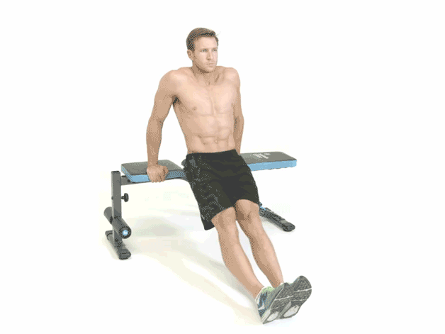

5-10 minutos de círculos de brazos y estiramientos de tríceps.
Circuito (3 rondas)
Fondos de tríceps en silla (Tricep Dips) - 15 repeticiones:
Técnica: Apoya las manos en el borde de una silla, baja el cuerpo flexionando los codos.

Pike Push-ups - 10 repeticiones:
Técnica: Desde una posición de flexión, lleva las caderas hacia arriba formando una "V" invertida, baja la cabeza hacia el suelo flexionando los codos.
Plank to Push-up - 10 repeticiones:
Técnica: Comienza en una plancha de antebrazos y empuja hacia una posición de flexión.
Descanso: 60 segundos entre rondas.
Enfriamiento
5-10 minutos de estiramientos de hombros y brazos.